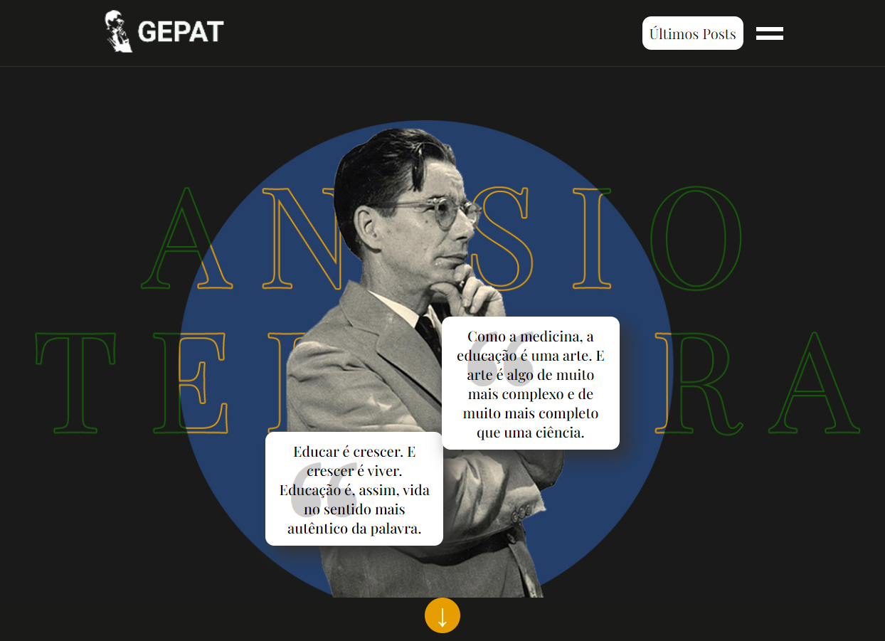
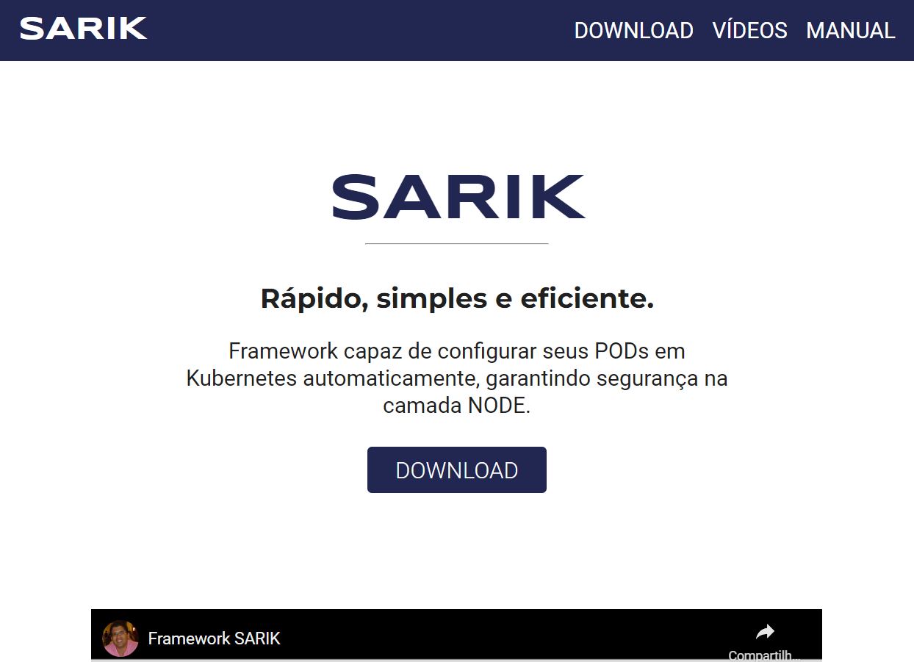

GEPAT
Desenvolvi um site totalmente personalizado utilizando Wordpress. Não só elaborei o código do zero, transformando páginas HTML para páginas dinâmicas no CMS, mas também realizei o design das mais de quinze páginas implementadas.
Aprendi durante o projeto:
- Trabalhar com o CMS Wordpress;
- Desenvolver sites personalizados para Wordpress;
- Trabalhar com diferentes post types;
- Aprimorar habilidades em design responsivo;
- Desenvolver gerador de páginas com plugin ACF;
- Quer saber mais? Pergunte-me na entrevista 😉
- HTML
- CSS
- JAVASCRIPT
- WORDPRESS
- PHP
- FIGMA
SARIK
Desenvolvi um site totalmente personalizado utilizando as tecnologias básicas do Front-End. A ideia era realizar a implementação de um website simples para o download de um framework, além de criar páginas para alocação de vídeos e um guia de como utilizá-lo. A elaboração do design das páginas também ficou ao meu cargo, utilizei a ferramenta Figma para a prototipagem.
Aprendi durante o projeto:
- Trabalhar com Grid Layout e FlexBox;
- Pensar mais em design responsivo;
- Consistência do design ao longo de diferentes páginas.
- HTML
- CSS
- JAVASCRIPT
- FIGMA